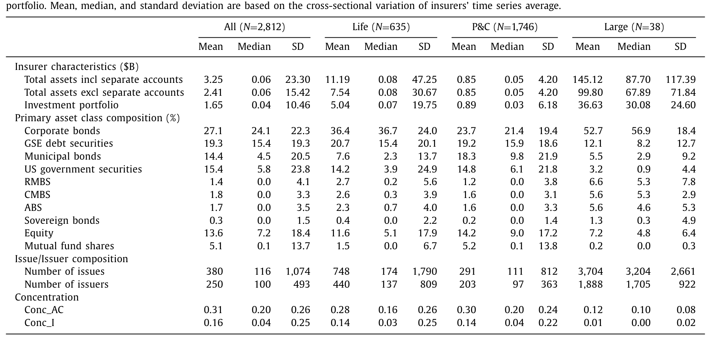
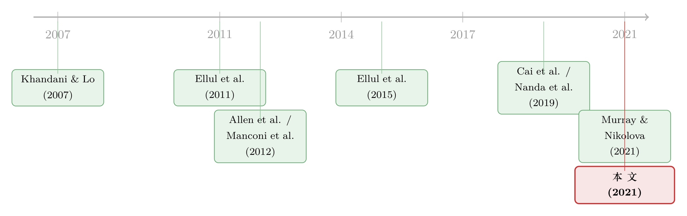

买在一起，卖也在一起：当保险公司的持仓「撞衫」
本文读的是 Girardi, Hanley, Nikolova, Pelizzon & Getmansky Sherman (2021, Journal of Financial Economics)：用一个简单到只有零和一之间的「余弦相似度」去刻画两家保险公司持仓的「撞衫」程度，作者发现——持仓越像的一对保险公司，往后一年里共同抛售（common sales）的规模就越大；一旦遇上雷曼破产或卡特里娜飓风这样的冲击，这种共同抛售还会真切地压低它们共同持有的公司债的价格。更要紧的是，这把尺子对任何披露持仓的机构都能算，于是它成了监管者一个事前就能用的「谁会跟着谁一起跑」的预警工具。
1 一个让监管者睡不着的猜想
先讲一个画面。2008 年之后，美国金融稳定监督委员会（Financial Stability Oversight Council, FSOC）把三家保险公司——Prudential、MetLife、AIG——一一贴上了「非银行系统重要性金融机构」（systemically important financial institution, SIFI）的标签。理由里有一句话格外刺眼：很多大型保险公司的投资组合「由相似的资产构成」，一旦被迫清算，这种相似可能放大冲击，「对更广泛的经济造成严重损害」。
这个担忧听上去很顺：大家都持有同一批资产，遇到坏天气，就会同时去卖同一批资产，价格于是被踩踏式地砸下去——也就是所谓的「火线甩卖」（fire sale）。银行业里，这条「资产共性 → 共同抛售 → 价格冲击」的链条早已被理论和经验反复讨论（Allen, Babus and Carletti, 2012; Acharya and Thakor, 2016; Silva, 2019）。保险公司同样要受风险资本约束、同样在固定收益市场里举足轻重，看起来天经地义地该被纳入同一个故事。
但作者在引言里抛出了一个相当尖锐的反问：这件「天经地义」的事，其实从来没有被经验证据证实过。 没有人拿数据说清楚，保险公司整体上持仓越相似，是否真的会更同步地卖出；更没有人证明，这种同步卖出真的会动到价格。监管者的雷达上写满了警告，雷达本身却从未被校准。
于是这篇论文要做的事就清楚了：把这个被默认为真、却悬而未证的命题，第一次放到 2002–2014 年的保险公司持仓与交易数据上，老老实实地检验一遍。
2 那把尺子：余弦相似度
要检验「持仓像不像」，首先得回答一个朴素的问题：「像」怎么量？
作者的选择是余弦相似度（cosine similarity）。把每家保险公司的持仓看成一个高维向量——每一维是它在某一类资产、或某一个发行人上的权重——两家公司的相似度，就是这两个向量夹角的余弦。它有两个让人愿意用它的好性质：第一，它被牢牢地约束在 0 和 1 之间，完全可解释——两家持仓一模一样，相似度等于 1；两家毫无重叠，相似度等于 0。第二，它只需要持仓披露就能算，不依赖市场价格。
这里 w_{ik,t} 是保险公司 i 在 t 年末、第 k 类资产上的组合权重。作者在两个粒度上都算了这个指标：粗到 34 个资产大类（asset class），细到约 32,000 个发行人（issuer，用 6 位 CUSIP 识别）。
第二把配套的尺子，是共同抛售本身怎么量。作者把每家公司每个季度末的「净卖出」（net sales，卖出减买入、只取正值）也写成一个向量，再取一对公司两个净卖出向量的点积（dot product）——两家在同一批资产上同时净卖出得越多，这个共同抛售量就越大。
顺带一提，作者还用同一套权重定义了组合集中度（concentration），就是一个赫芬达尔指数（Herfindahl index）：
$$\text{Conc}_{it} = \sum_{k=1}^{K} w_{itk}^{2}$$
这把「相似度」和「集中度」分得很干净：前者讲两家像不像，后者讲一家自己押得分不分散。
3 数据：把 5,369 家拼成 2,812 个
数据来自保险公司向 NAIC（National Association of Insurance Commissioners）提交的法定报表，经 A.M. Best 分发，样本期 2002–2014。报表里的 Schedule D 逐券列出每家公司年末持有的每一只证券（9 位 CUSIP）的面值与账面价值，以及当年处置与买入的明细——作者剔除了到期、偿还、赎回这类非交易性处置，只留下真正的「卖」。
一个关键的处理：保险业的主流组织形式是保险集团（insurance group），集团内子公司的投资往往是集中管理的。所以作者把 5,369 家个体保险公司按集团聚合，得到 2,812 个「保险公司」（全文都以此为单位），其中财险（P&C）1,746 家、寿险（life）635 家；再按「至少有一年总资产超过 $50 十亿」这条监管者用过的 SIFI 候选门槛，划出 38 家「大型」公司。
表 1 给了这群公司的画像。平均总资产 $2.41 十亿，但寿险（$7.54 十亿）远大于财险（$0.85 十亿），大型公司更是高达 $99.8 十亿。固定收益证券占了持仓的 81%，其中公司债 27%、GSE 债与资产支持证券 19%、市政债 14%、美国政府债 15%、股票 14%、共同基金份额 5%。平均一家公司持有 380 只证券、来自 250 个发行人，而大型公司是一个量级以上的 3,704 只、1,888 个发行人。

Table 1
作者还顺手做了聚类分析（cluster analysis），发现这两千多家公司其实只落在 3 个清晰的簇里：一簇在大类资产间相对分散，一簇主押公司债，一簇由股票主导。换句话说，保险公司的投资策略屈指可数——这和品种繁多的共同基金恰成对照，也正是「持仓容易撞衫」的结构性根源。
4 核心一步：把「相似」拆成危险的和安全的
到这里，论文证明了第一件事：一对公司当年的持仓相似度，正向预测它接下来一年里逐季的共同抛售。 持仓越像，往后卖得越同步。这一步坐实了 FSOC 担忧的前半句。
但真正关键、也最能体现作者功力的一步，是他们不满足于「相似度有用」这个笼统结论，而是去追问：到底是哪一种相似在起作用？
接着，一个自然的问题是：保险公司的持仓为什么会重叠？作者给了两条线索——一是负债匹配的需要（卖同样的保单，自然要配同样久期的资产），二是「追逐收益」的冒险动机（Becker and Ivashina, 2015）。为了把这两股力量拆开，作者做了一个很漂亮的双重分解：
- 先按资产「出事时会不会被砸价」（流动性与信用质量），把每家公司的组合切成高风险资产与低风险资产两块，分别算相似度；
- 再把高风险、低风险相似度对负债相似度做回归，分出「负债重叠所能解释的部分」（期望相似度, expected）与「无法解释的部分」（非期望, unexpected）。
于是反转出现了。作者发现，对共同抛售贡献最大的，是那种支撑着双方重叠负债、却落在高风险资产上的相似度——也就是说，最危险的不是「大家都持有国债」，而是「大家为了同一类保单，不约而同地在高风险资产上加了码」。与此相对，那种「期望的、低风险的」安全相似度（safe similarity），反而与共同抛售负相关。
这个结论的政策含义相当微妙：共同持仓之所以转化为共同抛售，很大程度上是保险公司在资产—负债管理（asset-liability management）的约束之内主动加大风险敞口的结果。这意味着监管者想「掐掉」这条链条会格外棘手——因为它长在合规的负债匹配里，而不是某种明显越界的行为里。
5 但它真的动价格吗？两场天灾人祸的检验
相似度能预测共同抛售，不等于共同抛售能动价格。要把因果钉死，需要外生的冲击。作者找了两个。
第一个来自保险业之外。 2008 年 9 月雷曼破产，AIG 因信用违约互换敞口濒临倒闭、最终被联邦政府接管，银行与 AIG 都被迫变卖资产以补充监管资本。作者把「更可能暴露在这场冲击下」的公司定义为两类：持有较多银行债的，或与 AIG 持仓相似度较高的。结果是，对这些暴露的配对，持仓相似度越高，雷曼破产前后的共同抛售就越大——尤其当那份期望相似度落在高风险资产上时。
第二个来自保险业之内、且打的是负债端。 卡特里娜与丽塔飓风登陆后，敞口在受灾州的财险公司被迫变卖资产去覆盖保单赔付。作者发现，在飓风发生的那个季度，暴露的配对比未暴露的配对，相似度推高共同抛售的力度更强。一头冲击资产、一头冲击负债，一头来自业内、一头来自业外，结论却一致：保险公司的持仓相似度——尤其是高风险资产上的相似度——在压力时期与共同抛售强相关。
那价格呢？作者把视线收到一个可观测价格的资产上：公司债。对每一对公司，构造它们共同持有的公司债组合在冲击前后一个季度的加权平均收益率利差变化（yield spread change）。结论是：冲击期间，相似度越高，暴露配对共同公司债组合的利差被推得越高——也就是价格被压得越低，而未暴露配对则没有这种效应。这正是「火线甩卖」该有的指纹。
进一步看它们卖什么也很有意思：被不成比例地多卖的，是股票、共同基金、美国政府债这些流动资产——这与 Ellul, Jotikasthira, Lundblad and Wang (2015) 关于保险公司会「策略性地跨资产类别交易、以减小自己卖压价格冲击」的发现一脉相承。但同时，相似度更高的公司，卖出的公司债比例也更高。于是一个反馈回路浮现出来：投资者 → 资产价格 → 再回到投资者。作者由此点出本文相对前人的一个推进——以往研究多看保险公司的「羊群行为」（herding）如何影响单只公司债的价格（Ellul et al., 2011; Cai et al., 2019; Nanda et al., 2019），而本文记录的是对保险公司自己持有的公司债组合价值的冲击。能影响价格、又会被价格反过来影响的机构，恰恰是最可能制造不稳定的那一类。
（关于「谁在持有一只债券会反过来定价这只债券」这件事，可参见《谁在持有这张债券，决定了它的价格》；关于保险公司财务状况如何驱动其组合选择，可参见《财务状况会替机构投资者「做决定」吗？——来自保险公司的证据》。）
6 把尺子交到监管者手里
故事讲到这里还差最后一块。作者把成对的相似度聚合成一个机构层面的指标：一家公司与样本里所有其他公司相似度的平均值。他们证明，这个指标能预测一家公司未来「与全市场同步卖出」的程度——即便控制了公司自身的规模之后依然成立。
这一步把论文从「描述一个现象」抬升到了「提供一个工具」。监管者最近正把系统性风险的认定，从「以实体为本」（entity-based）转向「以活动为本」（activity-based）——承认风险可以来自众多分享相同激励的公司的相关行为。本文的相似度恰好是为这套思路量身定做的：它不依赖市场价格，因此对任何披露资产类别或发行人持仓的机构都能算——银行、对冲基金、货币市场基金皆可。作为佐证，作者发现这个相似度与 SRISK（Brownlees and Engle, 2017，一个只对上市公司可得的系统性风险度量）之间存在正的秩相关。一个不限于上市公司、却与既有指标方向一致的预警器，价值正在于此。
7 文献脉络
把这条线索往回拉，会看到它由几股研究汇流而成。
最早的火花来自对冲基金：Khandani and Lo (2007) 记录了 2007 年夏天，一群持仓相似的对冲基金的火线清算，如何对更广的多空与纯多头股票组合制造了价格压力——「相似 → 共同抛售 → 价格压力」的雏形在此。

接着，公司债市场成了主战场。Ellul, Jotikasthira and Lundblad (2011) 证明监管压力会逼出保险公司的火线甩卖；Manconi, Massa and Yasuda (2012) 刻画了机构投资者如何在 2007–2008 年传播危机；Ellul et al. (2015) 又揭示历史成本会计下保险公司的「收益交易」与跨资产腾挪。理论一侧，Allen, Babus and Carletti (2012)、Acharya and Thakor (2016)、Silva (2019) 把「资产共性—负债期限—系统性风险」的机制讲清楚；Kartasheva (2014) 则点明保险公司不必倒闭、只要甩卖就足以传染。
更晚近的一批工作把镜头对准保险公司在公司债里的「投资共性」：Cai, Han, Li and Li (2019) 量化机构羊群的价格冲击，Nanda, Wu and Zhou (2019) 把火线甩卖风险接进公司债利差，Murray and Nikolova (2021) 则说明保险公司基于评级的资本要求会扭曲公司债横截面收益。本文站在这条脉络的汇合处：它不再局限于公司债这一类资产，而是用一把对全组合都适用、且对任意披露机构都可算的相似度尺子，把「共同持仓 → 共同抛售 → 价格冲击」整条链条第一次在保险业里贯通。
8 评论与延伸（Q&A + 研究方向）
(a) 几个可能的疑问
Q：余弦相似度和「集中度」「羊群行为」到底差在哪？
集中度只描述一家公司自己押得分不分散（赫芬达尔指数），是单体指标；羊群行为通常是事后看大家是否同向交易。余弦相似度是事前的成对指标，直接量两家持仓向量的夹角，0 到 1 完全可解释，且只需持仓披露、不需价格或交易，这是它能被当成监管预警器的根本原因。
Q：「持仓相似 → 共同抛售」会不会只是反过来——都被同一个宏观因子驱动，而非相似度本身在起作用？
这正是作者用两场外生冲击（雷曼、飓风）来防的反向因果。在冲击设定里，比较的是暴露与未暴露配对在相似度上的差异如何转化为共同抛售与价格，识别来自「谁被这场特定冲击打到」的外生差异，而不是单纯的同期相关。飓风尤其干净——它打的是受灾州财险公司的负债端，与资产市场基本无关。
Q：最反直觉的结论是什么？
是相似度的「双面性」。不是所有相似都危险：支撑重叠负债、却落在高风险资产上的相似度，最能放大共同抛售；而期望的、低风险的「安全相似度」反而与共同抛售负相关。危险来自合规的负债匹配之内的主动冒险，这让监管更难对症下药。
Q：既然要砸价，为什么压力期里被多卖的反而是股票、国债这些流动资产？
因为保险公司会策略性地跨资产腾挪，优先卖流动、价格冲击小的资产来减小自己的损失（呼应 Ellul et al., 2015）。但相似度更高的公司，卖出公司债的比例同样更高——价格冲击正是在这些共同持有的公司债上被识别出来的。
Q：为什么非要在集团层面、而不是个体公司层面做分析？
因为保险集团的投资决策是集中管理的，子公司之间投资高度联动。在个体层面算相似度会把同一集团内部的「自我重叠」误当成跨机构的系统性共性，从而高估风险。聚合到 2,812 个集团是为了让相似度真正反映跨机构的撞衫。
Q：这套方法只对保险公司有用吗？
不。作者反复强调它对任何披露资产类别或发行人持仓的机构都能算——银行、对冲基金、货币市场基金都行。它与只对上市公司可得的 SRISK 存在正的秩相关，意味着可以与现有指标搭配使用，覆盖那些价格类指标够不着的非上市机构。
(b) 几个可能的研究问题与提案
1. 把这把尺子搬到外资公司债持有人身上。 【经济故事】本文证明「持仓相似度」能预测压力期的共同抛售。一个自然的延伸是：持有美国公司债的外资机构，彼此之间、以及与本土机构之间的相似度，是否在美元流动性冲击（如 2020 年 3 月）时放大了共同抛售与利差冲击？外资可能因母国监管、汇率对冲成本而呈现独特的撞衫结构。 【可行性】中。需要把 TRACE 与外资持有人数据（如 eMAXX、各国监管申报）拼起来，识别上可借鉴本文的「暴露 vs 未暴露」冲击设计。难点在外资持仓披露的颗粒度与覆盖度。
2. 相似度的「安全/危险」分解能否预测单券层面的流动性恶化？ 【经济故事】本文在组合层面看利差变化。但若把高风险相似度映射到具体债券，能否预测哪些券在冲击中流动性枯竭最快？这把「谁会一起卖」与「卖的是哪只券」接起来。 【可行性】高。本文的相似度可算，公司债流动性可用现成度量（参见《把「成交价」从「成交量」里解放出来——重新丈量公司债的流动性》）。识别上用冲击前的相似度预测冲击后的单券流动性。
3. 监管「合格抵押品清单」是否会内生地制造相似度？ 【经济故事】当某类债券变得「可抵押」「资本友好」，机构会蜂拥配置，从而推高彼此相似度——危险的高风险相似度可能正是监管规则的副产物。 【可行性】中。需要一次抵押品资格或资本规则的外生变更作为冲击（事件研究/DiD），观察相似度在规则变更前后的跳变。NAIC 的 RMBS/CMBS 估值法改革（Hanley and Nikolova, 2021）就是现成的实验场。
4. 把相似度网络做成动态预警，做样本外检验。 【经济故事】本文证明相似度事前可预测共同抛售。能否用滚动窗口构造一张随时间演化的相似度网络，在真实的样本外压力期（2020、2022）检验它对共同抛售与价格冲击的预测力？ 【可行性】高。方法完全是本文的延伸，数据为 NAIC 持仓的滚动更新，难点是把「网络位置」转化为可解释的预警阈值。
9 我的判断
这篇论文最实在的贡献，是把一句被监管者和学界默认为真、却从未校准的命题，第一次摆到了完整的保险业持仓—交易数据上，并给出了一把简洁、可解释、跨机构通用的尺子。它最聪明的地方不在「相似度有用」这个结论本身，而在那一步双重分解——把相似拆成危险的（高风险、支撑重叠负债）与安全的（期望、低风险），并指出后者甚至与共同抛售负相关。这一刀切下去，既解释了为什么前人笼统的「共性」度量结论时正时负，也把监管的难处摆到了明面：危险长在合规之内。
要我说，对识别最该保留的一点警惕，仍在于「相似 → 抛售 → 价格」这条链的最后一环。雷曼与飓风提供了不错的外生变异，但共同公司债组合的利差变化是一个被多重选择（卖什么、何时卖、组合里恰好有哪些券）层层过滤后的结果，价格冲击的方向虽对，量级要被解读为「纯粹的踩踏」仍需小心——保险公司有意把冲击挪到流动资产上，本身就说明它们在主动管理价格冲击，这会让公司债上观测到的利差变化既可能低估（被腾挪稀释）、也可能因选择而被高估。
后续我最想看到三件事：其一，把这把尺子接到外资持有人与跨境流动性冲击上，看撞衫的系统性后果是否在更全球化的持有人结构里被放大；其二，用更近、更剧烈的样本外压力期（2020 年 3 月）做一次真刀真枪的预测力检验；其三，明确区分「相似度是机构自选的」与「相似度是监管规则塞给它们的」——若后者占主导，那么治理这条链条的钥匙，或许根本不在保险公司手里，而在写规则的人手里。
参考文献
Acharya, V. V., & Thakor, A. V. (2016). The dark side of liquidity creation: Leverage and systemic risk. Journal of Financial Intermediation 28, 4–21.
Allen, F., Babus, A., & Carletti, E. (2012). Asset commonality, debt maturity and systemic risk. Journal of Financial Economics 104(3), 519–534.
Becker, B., & Ivashina, V. (2015). Reaching for yield in the bond market. Journal of Finance 70, 1863–1902.
Brownlees, C., & Engle, R. F. (2017). SRISK: A conditional capital shortfall measure of systemic risk. Review of Financial Studies 30(1), 48–79.
Cai, F., Han, S., Li, D., & Li, Y. (2019). Institutional herding and its price impact: Evidence from the corporate bond market. Journal of Financial Economics 131(1), 139–167.
Ellul, A., Jotikasthira, C., & Lundblad, C. T. (2011). Regulatory pressure and fire sales in the corporate bond market. Journal of Financial Economics 101(3), 596–620.
Ellul, A., Jotikasthira, C., Lundblad, C. T., & Wang, Y. (2015). Is historical cost accounting a panacea? Market stress, incentive distortions, and gains trading. Journal of Finance 70, 2489–2538.
Girardi, G., Hanley, K. W., Nikolova, S., Pelizzon, L., & Getmansky Sherman, M. (2021). Portfolio similarity and asset liquidation in the insurance industry. Journal of Financial Economics 142(1), 69–96.
Hanley, K. W., & Nikolova, S. (2021). Rethinking the use of credit ratings in capital regulations: Evidence from the insurance industry. Review of Corporate Finance Studies 10(2), 347–401.
Kartasheva, A. (2014). Insurance in the financial system. Unpublished working paper, Bank for International Settlements and University of St. Gallen.
Khandani, A., & Lo, A. W. (2007). What happened to the quants in August 2007. Journal of Investment Management 5(4), 29–78.
Manconi, A., Massa, M., & Yasuda, A. (2012). The role of institutional investors in propagating the crisis of 2007–2008. Journal of Financial Economics 104(3), 491–518.
Murray, S., & Nikolova, S. (2021). The bond-pricing implications of rating-based capital requirements. Journal of Financial and Quantitative Analysis, forthcoming.
Nanda, V., Wu, W., & Zhou, X. A. (2019). Investment commonality across insurance companies: Fire sale risk and corporate yield spreads. Journal of Financial and Quantitative Analysis 54(6), 2543–2574.
Silva, A. F. (2019). Strategic liquidity mismatch and financial sector stability. Review of Financial Studies 32(12), 4696–4733.